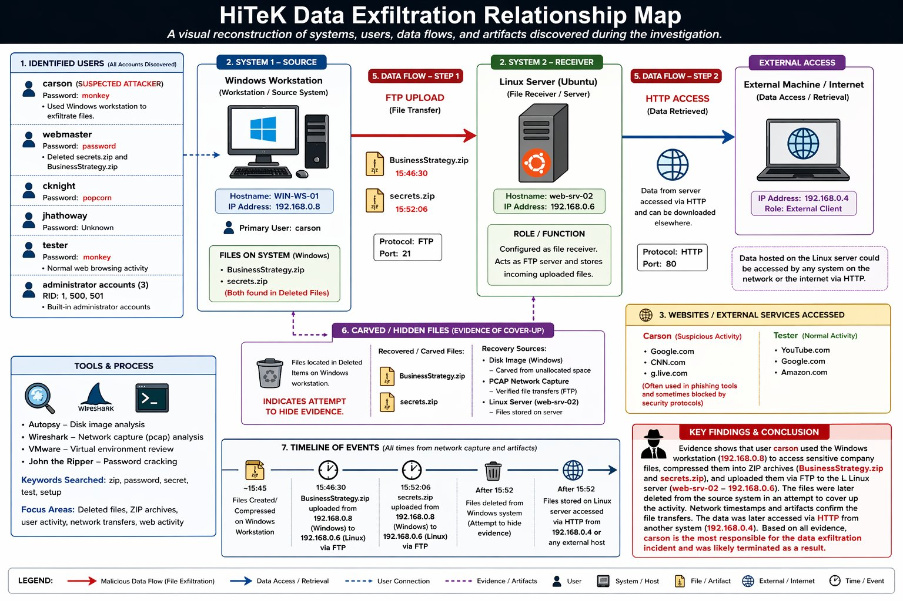
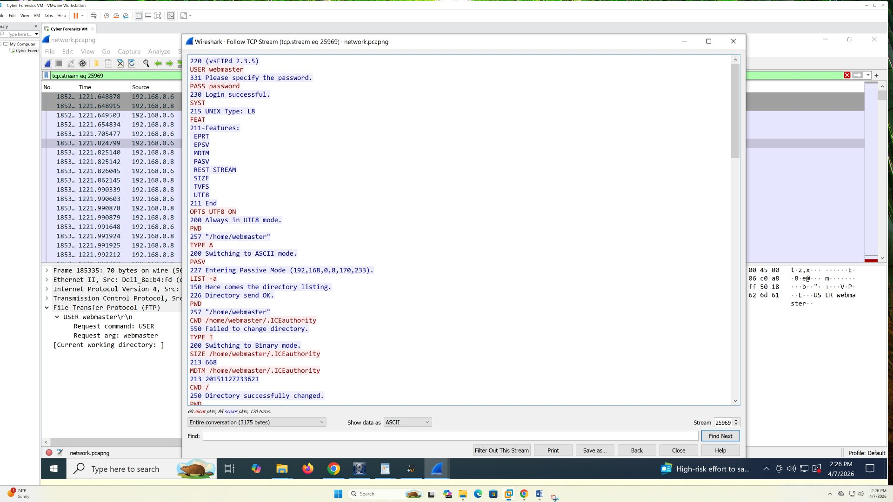
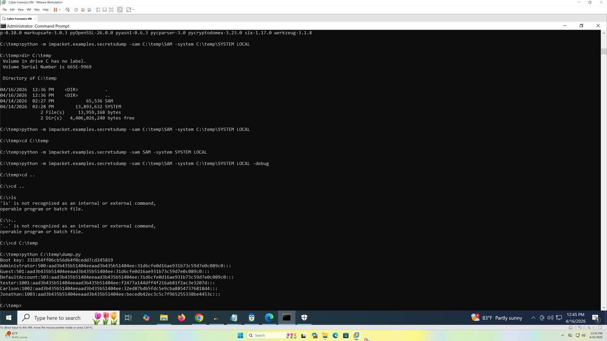
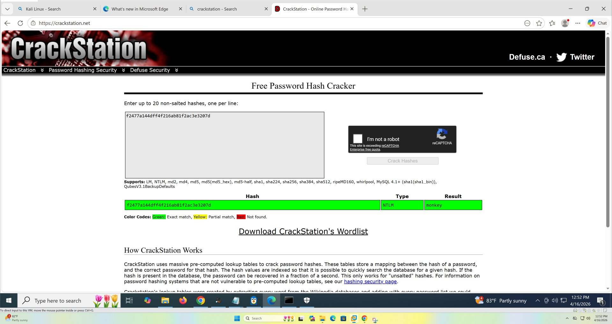
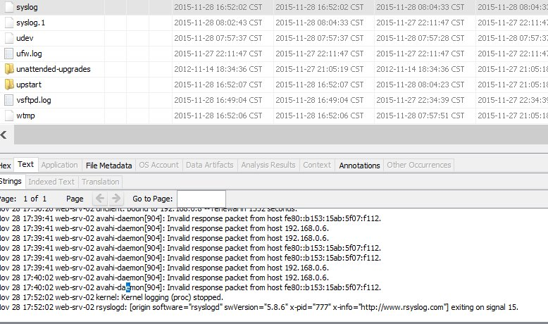

A Windows workstation image, a Linux server image, and a network capture were provided as part of a team forensics challenge simulating a data-exfiltration incident. Several user accounts existed on both systems, and nothing was pre-labeled — the responsible party and the exfiltration path both had to be reconstructed from artifacts alone.
Work with a small investigative team to identify which account was actually responsible, recover any deleted or hidden evidence, and reconstruct the full file-transfer chain from source workstation to external retrieval.
Whose account is actually responsible, given that several accounts show activity on both systems? Were the missing ZIP files really gone, or just hidden? Did the files actually leave the network, and who retrieved them?
Multiple accounts — webmaster, cknight, jhathoway on the Linux server; carson, tester, Jonathan on the Windows workstation — all had some footprint, so it wasn't obvious at first which one mattered. What resolved it was the FTP credentials captured in the packet capture: the login matched exactly what webmaster had configured on the server the night before, and Carson's Windows account was the only one active during the exact window the uploads occurred — placing one person at both ends of the transfer.
| Type | Indicator | Context |
|---|---|---|
| User | carson (Windows) | Primary suspect — password cracked via SAM hive + Impacket + CrackStation |
| User | webmaster (Linux) | FTP credentials used for both uploads |
| Host | Source workstation | Windows host where the ZIP files were created and later deleted |
| Host | Receiving server | Linux host configured as both FTP and web server (chmod 777) |
| File | secrets.zip / BusinessStrategy.zip | Password-protected; recovered from deleted/unallocated space |
Hostnames and IPs generalized here; full identifiers are documented in the team's final report.


USER webmaster / PASS password, the login later matched against the server's own configuration.
secretsdump.py pulling NT hashes for each Windows account from the recovered SAM/SYSTEM hives.

Screenshots pulled directly from the team's final report; VM/browser chrome cropped where it showed unrelated tabs.
"Which account is actually responsible, when several accounts show activity across two systems?"
Bash history and auth.log on the Linux server, the recovered Windows SAM hive, the FTP credentials captured inside the packet capture's TCP stream, and the carved contents of the deleted ZIP files.
With six-plus accounts showing some activity across both machines, it wasn't obvious at first which one was central to the exfiltration rather than just incidental noise.
The packet capture's captured FTP login matched exactly the credentials configured on the server, and cross-referencing timestamps showed the same Windows account was active during both the file creation and the upload window — narrowing six possible accounts to one.
Cross-referencing account activity across both disk images and the network capture, instead of trusting any single artifact in isolation, is what turned a list of usernames into a defensible attribution.